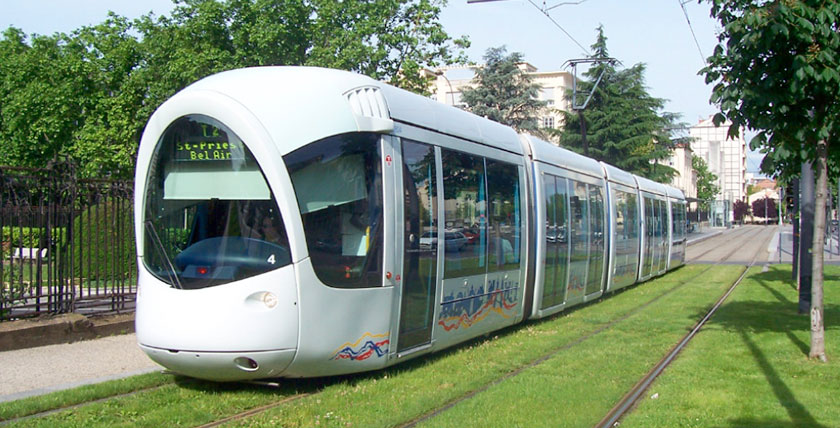

Metro, Tram, Buses
You can move around Lyon with 5 efficient metro lines, 5 tram lines and 138 bus lines.
The average ticket price is 1,80€, Get 10 in a bundle for a little more than 16€. The weekly pass is around 15€.
Rental bikes

The Vélo’v rental bike system is easy access and pretty cheap. Pick any bike for 1 € per day, then you can ride 30 minutes for free every time you pick a bike.
More than 300 stations are available today and you can pick and leave your bike wherever you want.
Taxis

You can use Lyon’s extensive taxi network to go almost anywhere for under 20€.
Trip from the airport to the city center will be ±50€.
Walking

Lyon is a very walkable city. You can wander around the center and reach easily most spots.
Boats

There is a boat service from Presqu’île to the confluence area.